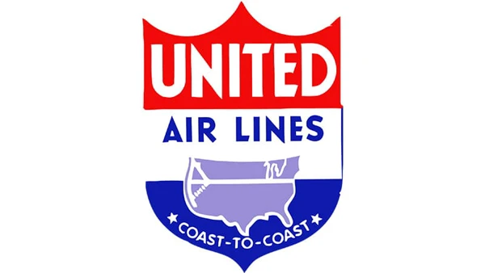
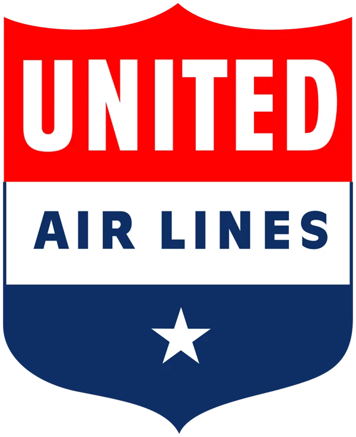
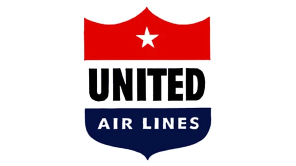
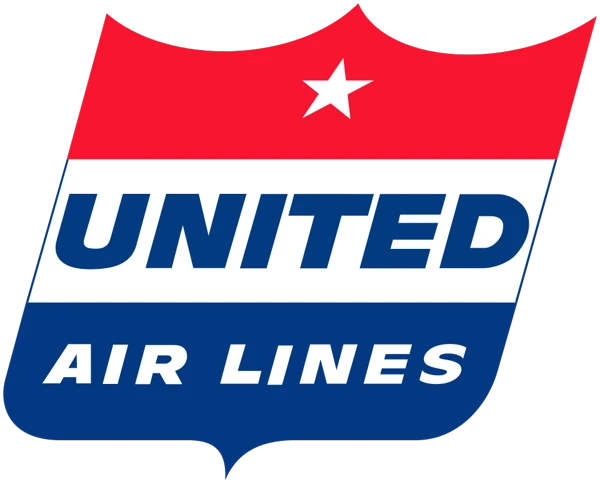
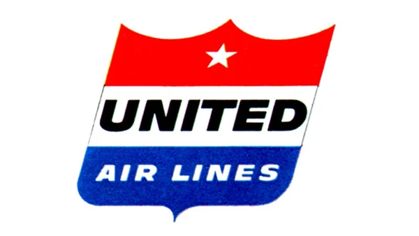
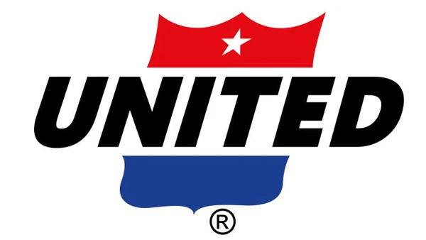
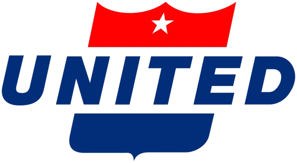
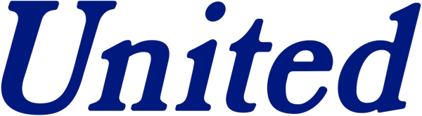
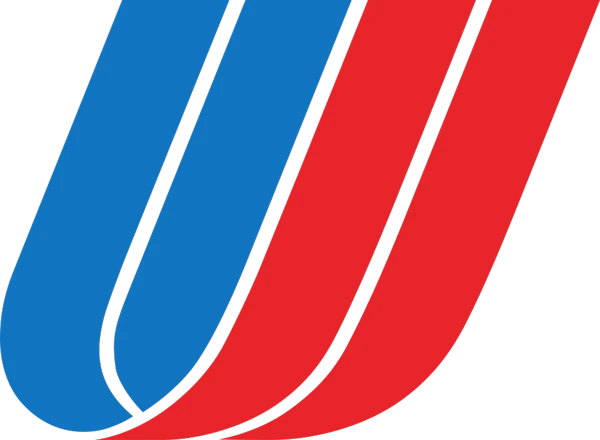
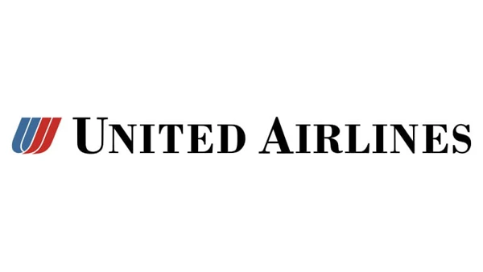

유나이티드 항공 United Airlines
유나이티드 항공(United Airlines)은 시카고에 본사를 둔 미국의 항공사로, 여러 국제공항을 허브 공항으로 운영한다. 이 회사의 모기업은 유나이티드 콘티넨탈 홀딩스이다.
최종 업데이트

유나이티드 항공은 어떤 브랜드인가
유나이티드 항공은 항공 우편배달 업무를 시작으로 성장한 대형 항공사이다. 미국 전 지역과 여러 도시를 잇는 노선을 확보했으며, 대서양 횡단 및 유럽 노선으로 사업을 확장했다.
세계 최대 항공 동맹인 스타얼라이언스의 창립 회원사로서 국제적인 네트워크를 구축했다. 저가 항공사의 출혈 경쟁과 경영상 압박을 겪었으나, 구조조정 및 합병을 통해 회복하였다.
현재 다양한 자회사 및 프리미엄 서비스를 운영하며 광범위한 항공 서비스를 제공한다.
유나이티드 항공은 어떻게 시작되고 성장했나
유나이티드 항공의 브랜드 아이덴티티는 무엇인가
이 브랜드는 오랜 역사와 다양한 합병을 통해 성장해 온 미국의 주요 항공사이며, 세계 최초의 항공 동맹인 스타얼라이언스의 창립 회원으로서 국제적인 위상을 갖는다. 여러 차례의 경영 위기를 극복하고 사업 재편을 거쳐 현재의 모습을 갖추었다.
유나이티드 항공의 대표 제품과 서비스는 무엇인가
유나이티드 항공은 미국 시카고에 본사를 둔 항공사로서 여객 운송 서비스를 제공한다. 과거에는 항공 우편배달 업무로 시작했으며, 현재는 광범위한 국내 및 국제 노선을 운항한다.
자회사인 유나이티드 익스프레스를 통해 허브 공항과 미국 및 캐나다의 소규모 도시를 잇는 지역 항공 서비스를 제공한다. 또한 유나이티드 피에스라는 프리미엄 서비스를 운영하며 특정 시설을 포함한 정기 항공편을 제공하기도 한다.
과거에는 테드 항공, 유나이티드 셔틀 등의 저가 항공사를 자회사로 운영한 이력도 있다.
유나이티드 항공은 지금 어떤 상태인가
2001년 9·11 테러와 경기 불황, 저가 항공사의 경쟁으로 경영상 어려움을 겪었으며, 2002년 부채 상환에 실패하여 파산 보호를 신청했다. 이후 직원 감원, 임금 삭감 등의 구조조정을 통해 사세 회복을 시도했다.
2011년 11월 30일 콘티넨털 항공과의 합병안이 미국 연방 항공국에 의해 최종 승인되었다. 합병 후 회사명은 유나이티드 콘티넨탈 홀딩스로 변경되었으며, 모든 시스템과 비행기 도색은 기존 콘티넨털 항공으로 통일되었다.
2012년 이후 시스템 통합이 완료되면서 합병 작업이 마무리되었다.
유나이티드 항공 로고는 어떻게 변해왔나

1937–1940
1940–1940
1940–1954
1953–1954
1954–1960
1960–1961
1961–1969
1969–1974
1974–1974- 1974–1974
- 1974–1974
- 1974–1974
- 1974–1974
- 1974–1988
- 1988–1993
- 1993–1993

1993–1998- 1998–현재
시기는 위키데이터 로고 기간 또는 위키미디어 커먼즈 파일 정보 기준입니다. 이미지를 누르면 원본 파일과 라이선스를 볼 수 있습니다.
자주 묻는 질문
유나이티드 항공는 어느 나라 브랜드인가요?
유나이티드 항공는 미국의 여행·호스피탈리티 브랜드입니다.
유나이티드 항공는 언제 설립되었나요?
유나이티드 항공는 1926년 설립되었습니다.
유나이티드 항공의 브랜드 아이덴티티는 무엇인가요?
이 브랜드는 오랜 역사와 다양한 합병을 통해 성장해 온 미국의 주요 항공사이며, 세계 최초의 항공 동맹인 스타얼라이언스의 창립 회원으로서 국제적인 위상을 갖는다.
유나이티드 항공의 대표 제품은 무엇인가요?
유나이티드 항공은 미국 시카고에 본사를 둔 항공사로서 여객 운송 서비스를 제공한다.
유나이티드 항공는 현재 어떤 상태인가요?
2001년 9·11 테러와 경기 불황, 저가 항공사의 경쟁으로 경영상 어려움을 겪었으며, 2002년 부채 상환에 실패하여 파산 보호를 신청했다.
유나이티드 항공의 창업자는 누구인가요?
유나이티드 항공의 창업자는 Walter Varney입니다(위키데이터 기준).
유나이티드 항공의 본사는 어디에 있나요?
유나이티드 항공의 본사는 윌리스 타워에 있습니다(위키데이터 기준).
출처와 검증
유나이티드 항공 관련 참고: 공식 웹사이트 · 위키데이터 Q174769 · 한국어 위키백과 · 영어 위키백과. 브랜드명은 한글과 원어를 함께 표기하되 데이터에 없는 표기는 만들지 않습니다. 기원 국가·설립연도는 검수된 정의문에서 확인된 값을 우선하고, 없을 때만 공식 웹사이트 URL이 일치하는 위키데이터 개체의 값을 씁니다. 탄생일의 월·일은 위키데이터, 위키백과 정보상자, 본문 가운데 같은 연월로 확인되는 값만 싣고, 출처끼리 다르면 싣지 않습니다. 웹 첫 보관은 인터넷 아카이브가 공식 사이트 첫 화면을 처음 보관한 날로, 사이트 개설일과 다를 수 있습니다. 위키데이터 값은 2026-09-07 기준입니다.